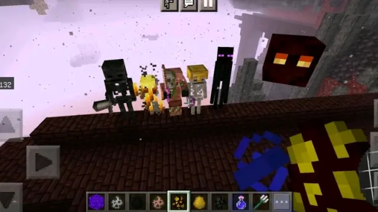
首先我们这里只介绍1.19.40之后的版本，之前的版本不予介绍，所以网易的可以退出去了，问题不大，在1.19.40之后，对于堡垒刷怪塔影响较大的改动，我们会在结尾处列出来，可以先去看一眼
并且我们这里面双维度的设计一般会分为两个版本，一个是使用传送门方块的版本，另外一个是使用完整的门或者切门的版本，但无论如何我们都不会使用，除了传送门方块之外的非法方块，问题不大
首先，下届堡垒当中会生成的生物有这个6种，分别是僵尸猪人，末影人，岩浆怪，骷髅这几种可以在其他地方自然生成的，以及凋灵骷髅和烈焰人这两种堡垒独有的生物
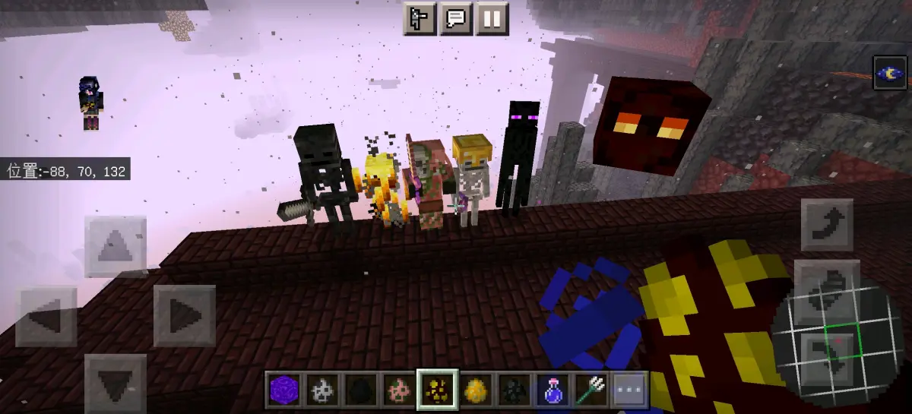
序言・基本知识
凋灵骷髅，空间检测范围2×3×2，碰撞箱检测范围0.7×2.4×0.7
烈焰人，空间检测范围2×2×2，碰撞箱检测范围0.5×1.8×0.5
僵尸猪人，空间检测范围2×2×2，碰撞箱检测范围0.6×1.95×0.6
骷髅，空间检测范围2×2×2，碰撞箱检测范围0.6×1.9×0.6
末影人，空间检测范围2×3×2，碰撞箱检测范围0.6×2.9×0.6
岩浆怪，空间检测范围2×2×2（1.19.60-）或4×3×4（1.19.60+），碰撞箱检测范围0.6×1.8×0.6（1.19.60-）或2.08×2.08×2.08（1.19.60+）
我们这里针对这六种生物，主要分别根据各自的特性，来制作三种农场，分别是堡垒全怪，以及单独的凋灵骷髅和单独的烈焰人农场，不过，每一种可能都还会稍微细分出几种结构，所以可以耐心看一下
一.堡垒全怪
首先我们这里说的堡垒全怪其实并不能算是真正意义上的全怪，因为它实际上只有凋灵骷髅、烈焰人还有末影人和骷髅这四种生物，僵尸猪人因为不能被挤压，所以就自然被淘汰了岩浆怪的话，作为刷怪塔三大毒瘤之一，自然是要想办法限制掉的行吧，那我们就来看一下结构吧
首先是1.19.60-的版本
BV1GS4y1x72d
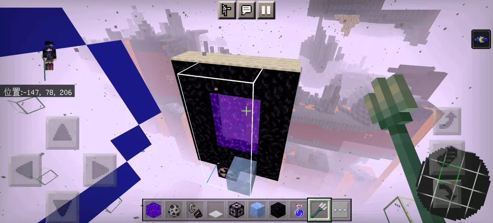
这个版本的结构相对较为简单，因为在1.19.60之前，下届堡垒当中包括骷髅在内的所有生物的生成亮度都是小于等于10，当然，像岩浆怪僵尸猪人这种无视亮度的，就肯定不用说，所以结构也很简单，直接西边或者北边建一个传送门就可以，完全没有技术含量可言也就不再过多介绍
然后是1.19.60+的版本
BV16o4y1a7Zo
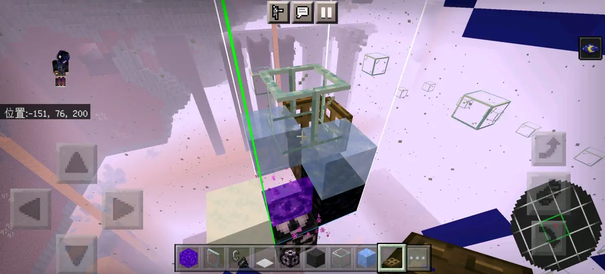
首先在这个版本当中，除了烈焰人还是10，以及岩浆怪和僵尸猪人依旧无视亮度之外，其他几个都下调到了≤7，并且岩浆怪的空间检测范围增加到了4×3×4
这个原理利用的是灵魂沙或者泥巴的高度不完整，并且当西北方有挤压的方块这个时候被玻璃板强行卡位的话，是会直接卡进方块里，而不会站在方块上，也就是生成的怪物不会站在黑曜石上而是卡进里面，也就是会碰到西北角的地狱门，从而被传送走
这个设计当中岩浆怪利用空间检测机制刷掉，僵尸猪人因为无法被挤压，所以也刷掉因此，完全不会卡怪
这个设计的原理也很简单，方块使用方面，灵魂沙可以换成泥巴，冰可以换成遮光玻璃或者TNT，需要注意的点是，当有多个并排的点時，不能直接切一长条只能一个一个单元的做，问题不大
传送门方块版本
BV1qR4y1k7Cc
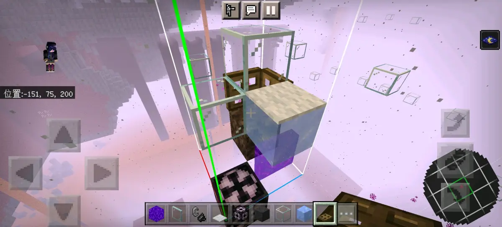
至于用传送门方块的话，讲实话，直接就在这个里面传送门对应的位置放一个就好了，那种通过挤压出来的感觉还没有这个来的方便，不过也放一下吧
需要注意的就是，你得先去测试一下是往哪个方向挤压的，不过要是你直接把两边都放上，传送门方块的话也可以直接做，总之问题不大
单维度版本
BV1Ed4y1R7BZ
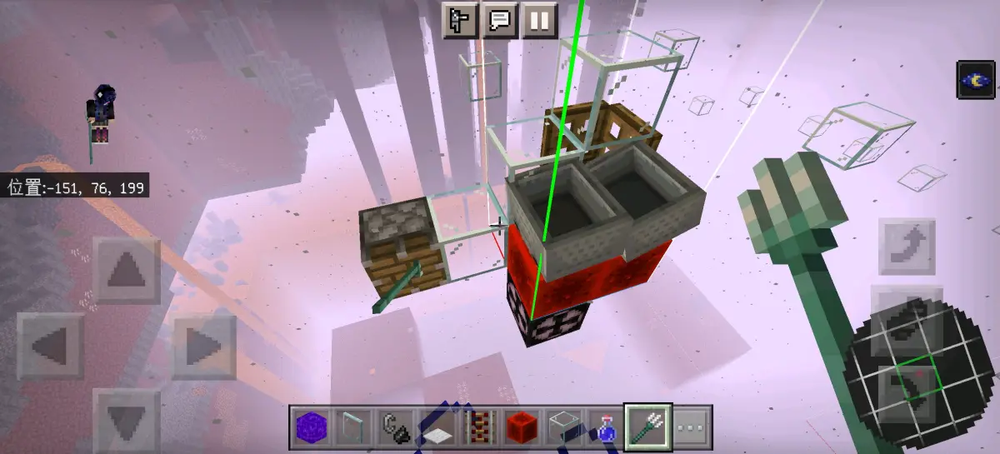
原理很简单，就是抖矿车高速运输，那边的活塞和三叉戟代表的是搅拌机，不过记得别忘了弄下车的装置，并不是我们不想做原地处理的，而是因为原地处理你真的不好同時弄凋灵骷髅和其他的，问题不大
二.凋灵骷髅
我们选择介绍的版本在1.19.40之后的主要原因就是是从这个版本开始凋灵玫瑰上只能生成凋灵骷髅与僵尸猪人，当然，如果想在之前的版本做，可以参考我们这个设计
BV1ug41187BS
行吧，那就先让我们来看一下具体的结构吧
首先是1.19.60-的版本
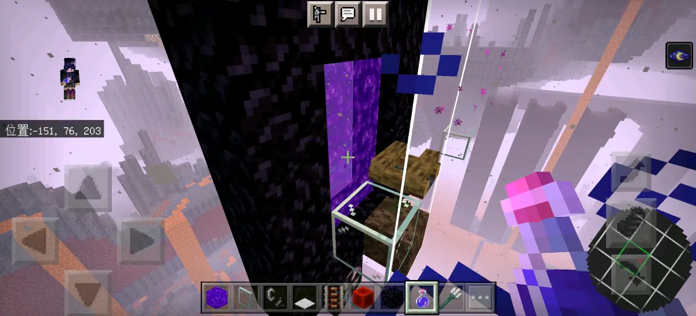
这个结构也是相当的简单，原理同样也很简单，就是凋灵玫瑰上只能生成僵尸猪人和凋灵骷髅，但是僵尸猪人不能被挤压，所以放一个挤压类的方块来限制僵尸猪人即可当然不放也是无所谓的，反正瞬间传送因为这个结构和原理什么都很简单，就不再多讲了
然后是1.19.60+的版本，在不用传送门方块的版本里，有两个瞬间传送的版本首先来看一下第一个
二次切门版本
BV1cK411C7ZZ
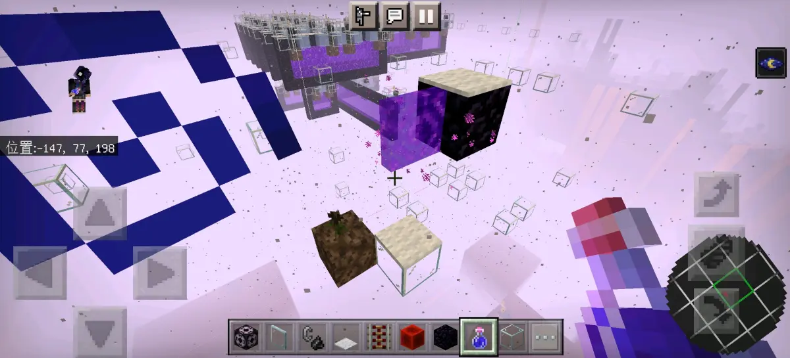
这个其实基本上就可以当成是用传送门方块的版本，只不过是通过两次切门来达到这样的效果罢了，不过，具体操作起来非常麻烦，所以且做且珍惜
原理就是西北角的第三格的传送门方块刚好到生成点亮度就变为了7，并且地毯是挤压类方块，限制了僵尸猪人，所以就刚好只生成凋灵骷髅，并且瞬间传送
完整门版本
BV1m24y187z1
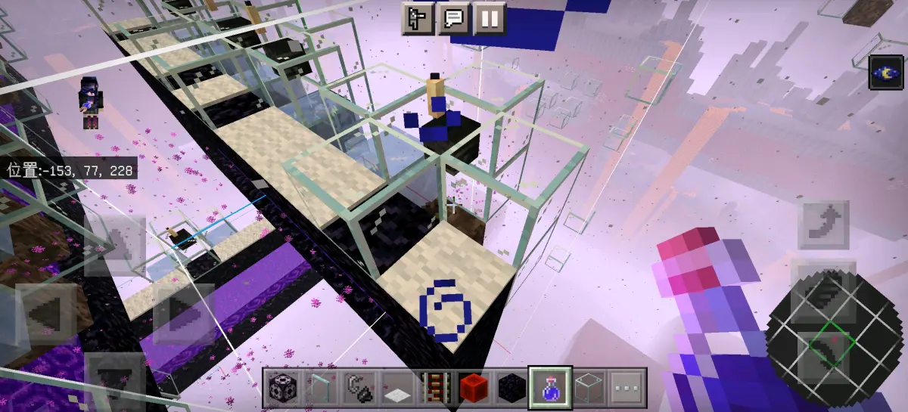
这个原理就稍微有一点复杂，但是主要就是利用凋灵骷髅比其他的生物宽0.1格，所以当它在西北边有侧面放置的头颅的時候，是会被挤向东边或者南边的，但是必须要在第三格再放一个长条的柱形方块，比如蜡烛或者玻璃板，当然，这里不能用玻璃板，不然空气检测通不过
那么，生物就会被卡进东边或者南边的方块当中，并且灵魂沙和泥巴高度不完整所以就刚好会碰到传送门，从而被传送，可能听起来有点复杂，要是听不懂的话，就去视频里面看一下，可能那样子会比较好懂一点，问题不大
单维度版本也是有两种，一种是吸引集中的，另外一种是原地处理的，也都分别展示一下吧
首先是吸引集中的
BV1EG411J734
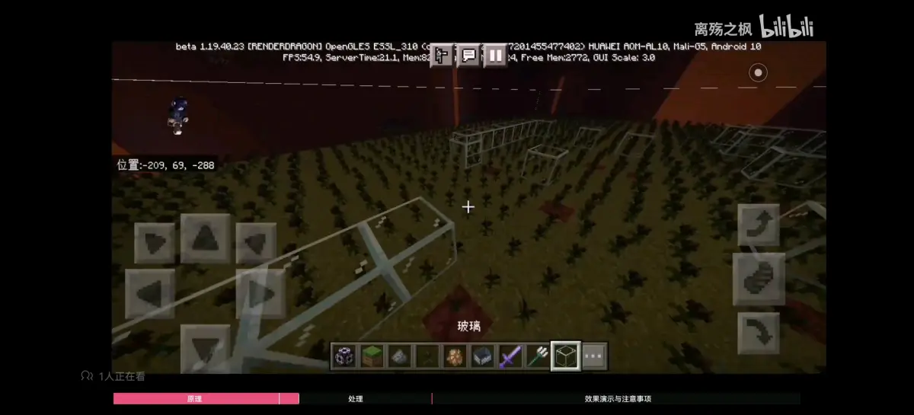
最好用铁傀儡吸引，因为比较方便，而且猪灵本身也会占用刷怪上限，具体倒是没什么可讲的，反正需要注意的就是它们两个的仇恨范围都是半径15的圆，问题不大
然后是原地处理版本
BV1dRpueiENS
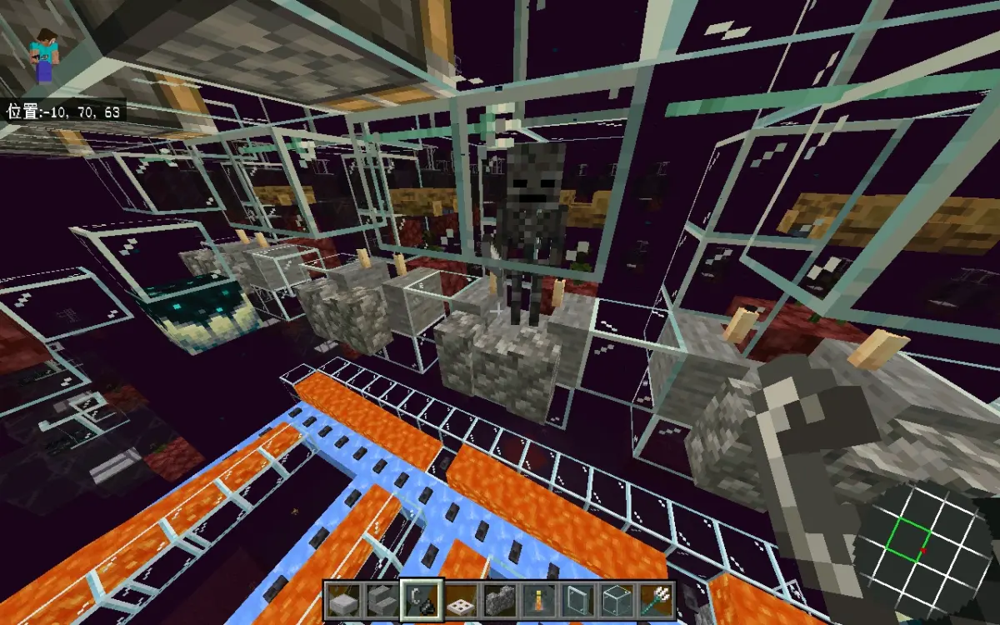
原理就是凋零骷髅被挤压到旁边去的時候，直接被第三格的玻璃压头，然后再被旁边的蜡烛和底下的楼梯卡位，就刚好站在两个楼梯中间，然后头顶就可以被三叉戟洗头，并且因为蜡烛增加了楼梯的挤压，所以掉落物会不会直接挤到旁边去，然后被墙壁卡位进入岩浆道收集，问题不大
楼梯还有蜡烛和玻璃是刚好用来卡高度让凋灵骷髅不会被击飞的催化剂用来处理经验，需要注意的点就是关机的時候是应该关掉红石信号源，不然的话，重新加载之后，有三叉戟会掉下来，问题不大
这个看不懂的话就去视频里看一下，那里面的简介讲的比较详细，虽然我们简介基本上都比较详细，但是都没人看就对了，总之问题不大
三.烈焰人
烈焰人是比较特殊的存在，因为在1.19将堡垒生物改为亮度小于等于10之后，在1.19.60当中，除了烈焰人之外，其他的都改回7了，唯独烈焰人依然保留了10的亮度，因此，它的农场也相对较简单，问题不大
首先是双维度版本
BV1uP4y1S7CW
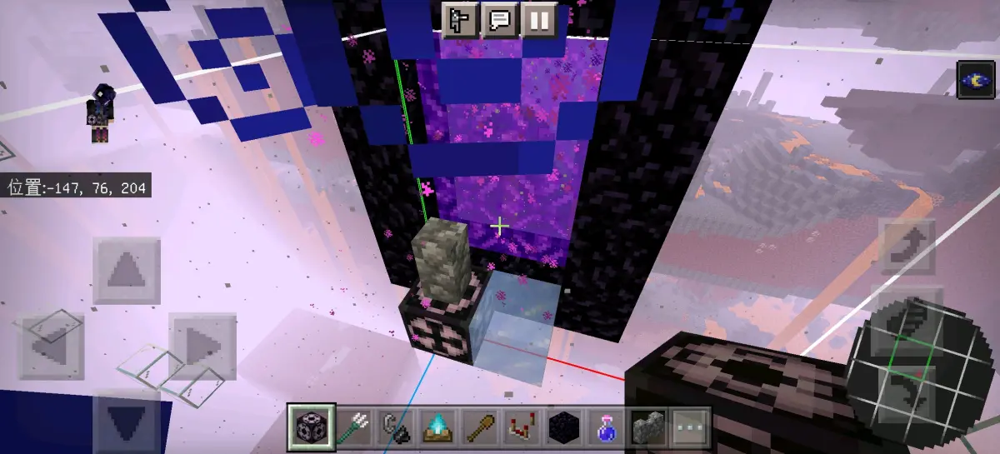
这个原理很简单，并且是1.19通用的，在1.19.60之前，堡垒的其他生物包括岩浆怪的碰撞箱检测宽度都是0.6格宽，唯独烈焰人是0.5格宽，而墙壁就刚好可以限制其他的0.6格宽的生物并且不影响0.5格宽的生物，所以就可以达到只生成烈焰人的效果，并且这个墙壁也是可以换成小型紫水晶芽的，不过成本有点高就对了
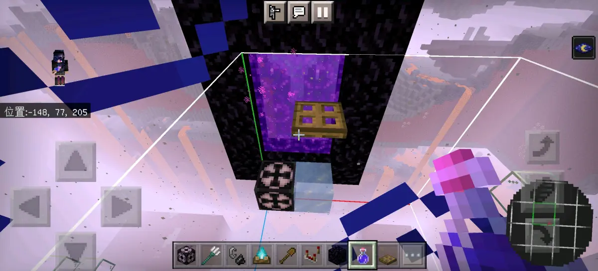
另外就是在1.19.60之后也可以使用挤压结构了，因为除了烈焰人，其他之前升上来的亮度都降到了7，并且岩浆怪的空间检测增大，所以使用亮度就已经可以限制掉小白和凋零骷髅，然后在东南边限制掉岩浆怪，挤压限制掉僵尸猪人就可以了，问题不大
并且在1.19.60更改了岩浆怪的空间检测范围之后，也是可以直接在头顶放一个活板门来达到限制其他生物的效果，问题不大，也就相当于多了一种选择，如果想看岩浆怪更改之后的空间检测机制，可以看这里
然后是单维度版本
BV11A411o7Bh
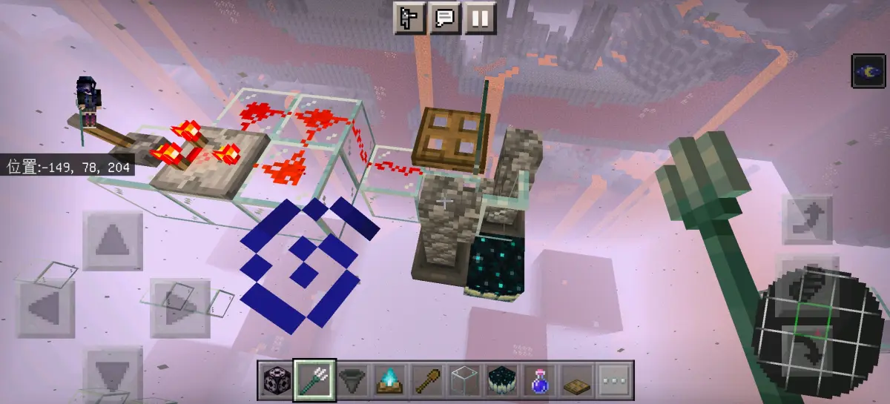
这个是1.19通用的版本，原理还是利用墙壁来限制其他生物，不过，因为结构的原因，只能使用一把三叉戟来进行处理，催化剂是处理经验并且当做生成点的，直接用漏斗吸就可以，不会漏掉的
虽然1.19.60之后可以只用活板门来进行限制，但是因为要固定烈焰人的原因，所以也不好用两把三叉戟处理，因此，即使是在1.19.60之后，因为西北角的活板门本身就已经起到了限制的作用依然推荐使用这个结构
只不过在那个之后，可以将墙壁换成别的可以跟玻璃板连接的方块，但是注意还是需要保留一部分限制的方块才行，否则，当活板门打开的时候，是没有限制作用的，总之问题不大
附录・更改记录
行吧，那基本上就这样，接下来，我们会把1.19.40开始的一些对堡垒刷怪塔产生的更改列出来
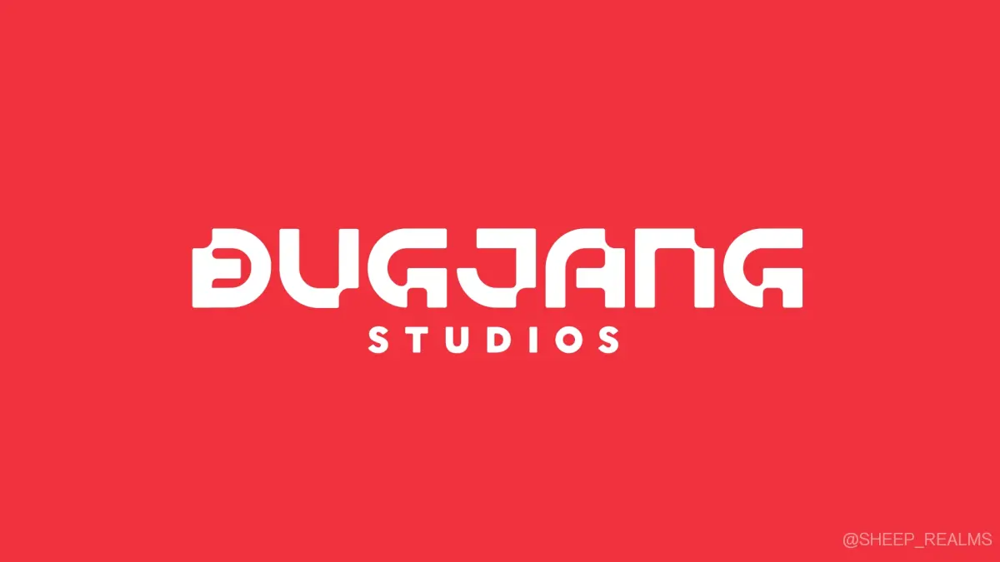
1.19.40
凋灵玫瑰中可以生成凋灵骷髅与僵尸猪人
1.19.50
灵魂沙和泥巴的碰撞箱高度降低了2个像素
1.19.60
更改了岩浆怪与史莱姆的空间检测范围
将末影人、骷髅、凋灵骷髅的生成亮度由10降低到了7
1.19.70
将僵尸猪人的生成亮度由无视亮度降低到了11
行吧，那就这些了，这里基本上也就是将之前的一些自己的和别人的东西总结，并且缝合到了一起，那就这样，到此结束，问题不大
部分设计视频来源：@橘猫sama@宛丘和风